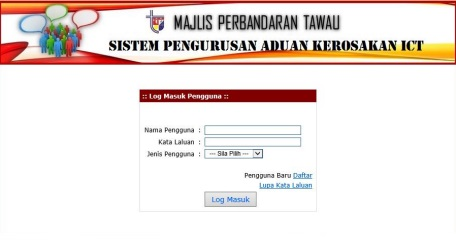

INTERNSHIP
SISTEM PENGURUSAN ADUAN KEROSAKAN ICT
Skill : PHP
This system consists of three level which are admin, technician and staff. Staff need to create an account before report the complaint. Once staff make a complaint, admin will assign the task to the technician. Then, the technician will update the task that had been given to him. Finally, the staff can view the status of their own complaint.

- This system was develop by using bootstrap, HTML5 and CSS for the frontend
- The backend are using PHP, mysql
- Maintain, Debug and support
- Installing and configuring computer hardware, software, systems, networks, printers and scanners.
- Planning and undertaking scheduled maintenance upgrades
- Setting up accounts for staff, ensuring that they know how to log in